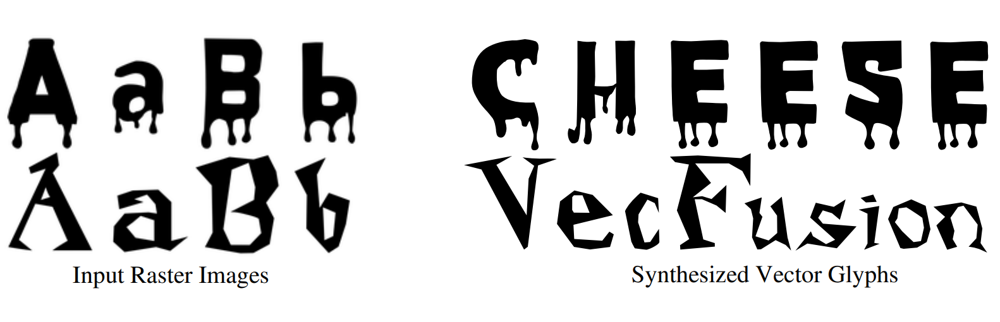
Vikas Thamizharasan, Difan Liu, Shantanu Agarwal, Matthew Fisher, Michael Gharbi, Oliver Wang, Alec Jacobson, Evangelos Kalogerakis
arXiv 2023
pdf | project
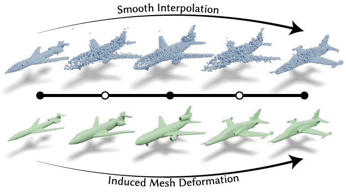
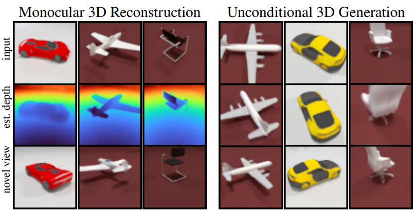
Titas Anciukevicius, Zexiang Xu, Matthew Fisher, Paul Henderson, Hakan Bilen, Niloy Mitra, Paul Guerrero
CVPR 2023
pdf | project | code
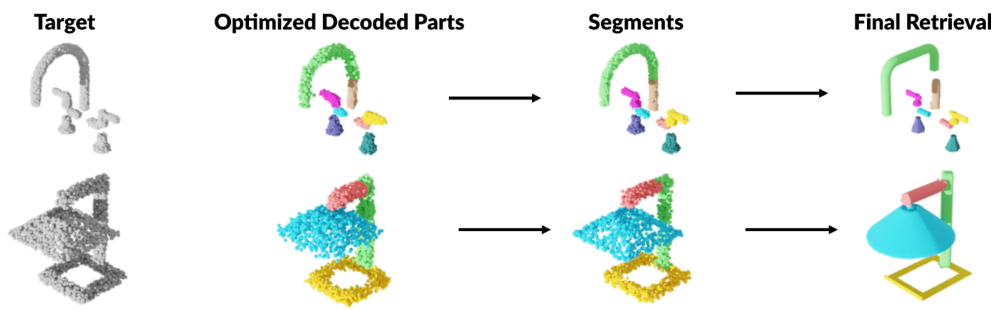
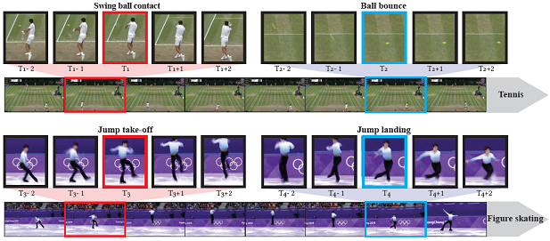
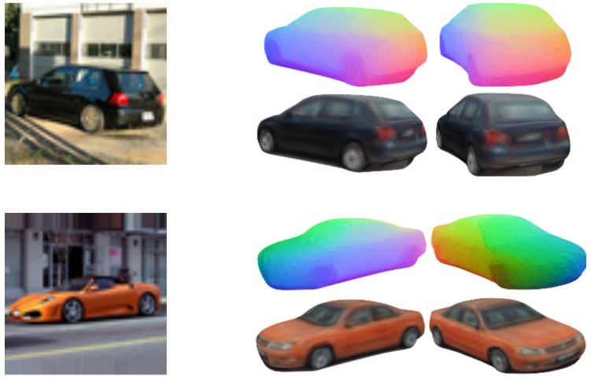
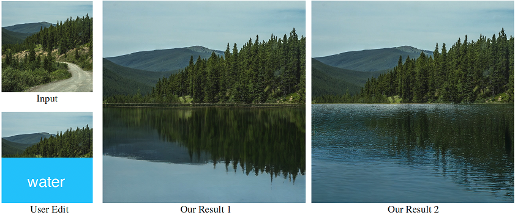
Difan Liu, Sandesh Shetty, Tobias Hinz, Matthew Fisher, Richard Zhang, Taesung Park, Evangelos Kalogerakis
SIGGRAPH 2022 (Journal track)
pdf | project | code
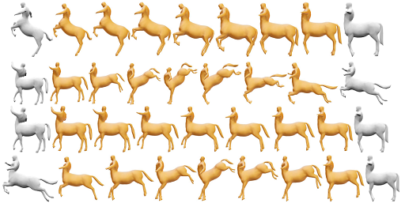
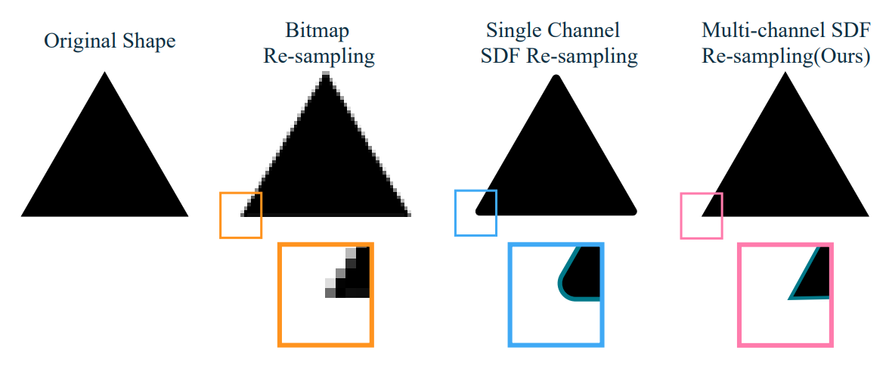
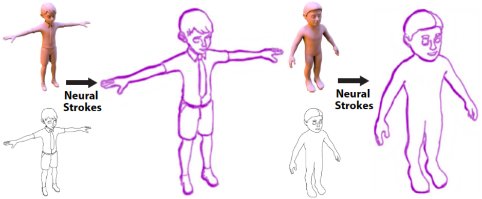
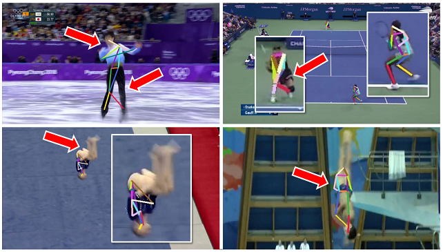
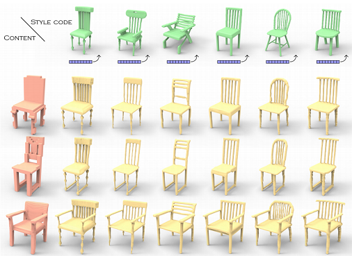
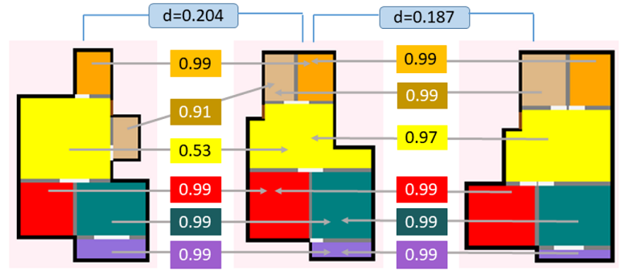
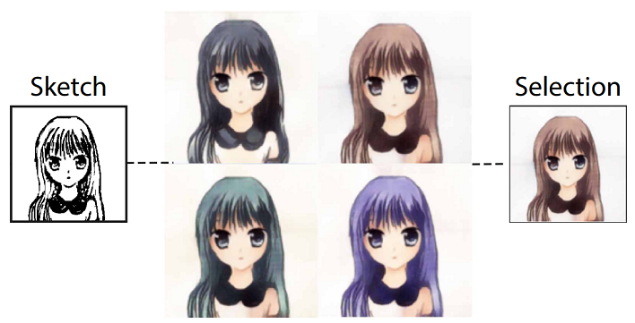
Rawan Alghofaili, Matthew Fisher, Richard Zhang, Michal Lukac, Lap-Fai Yu
Graphics Interface 2021
pdf | project | video
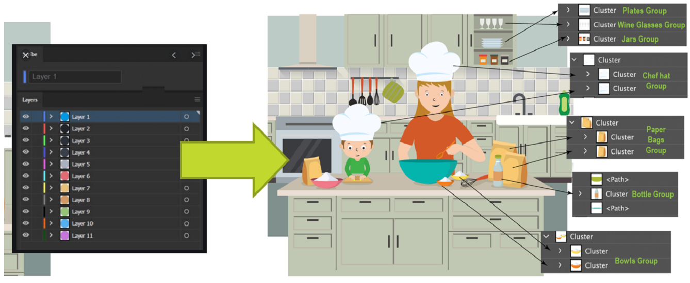
Rui Ma, Akshay Gadi Patil, Matthew Fisher, Manyi Li, Soren Pirk, Binh-Son Hua, Sai-Kit Yeung, Xin Tong, Leonidas Guibas, Hao Zhang
SIGGRAPH Asia 2018
pdf | project
Yannick Hold-Geoffroy, Kalyan Sunkavalli, Jonathan Eisenmann, Matthew Fisher, Emiliano Gambaretto, Sunil Hadap, Jean-Francois Lalonde
CVPR 2018
pdf | project

Zachery DeVito, Michael Mara, Michael Zollhoefer, Gilbert Bernstein, Jonathan Ragan-Kelley, Christian Theobalt, Pat Hanrahan, Matthew Fisher, Matthias Nießner
SIGGRAPH 2018
pdf | bib | project

Gilbert Bernstein, Chinmayee Shah, Crystal Lemire, Zachery DeVito, Matthew Fisher, Philip Levis, Pat Hanrahan
Transactions on Graphics 2016
pdf | bib | code

Matthias Nießner, Benjamin Keinert, Matthew Fisher, Marc Stamminger, Charles Loop, Henry Shafer
Computer Graphics Forum 2015
pdf | bib


Michael Zollhoefer, Matthias Nießner, Sharam Izadi, Christoph Rehmann, Matthew Fisher, Chenglei Wu, Andrew Fitzbiggon, Charles Loop, Christian Theobolt, Marc Stamminger
SIGGRAPH 2014
pdf | bib | video


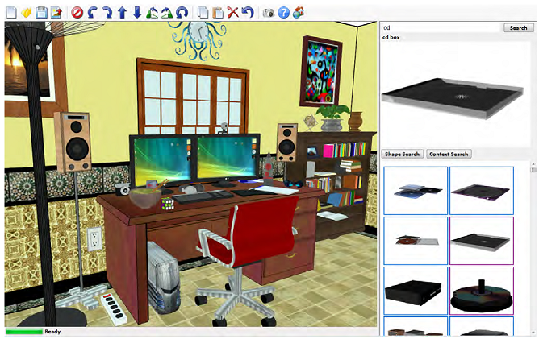